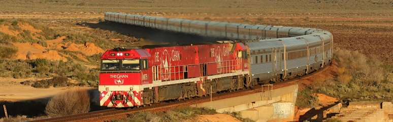
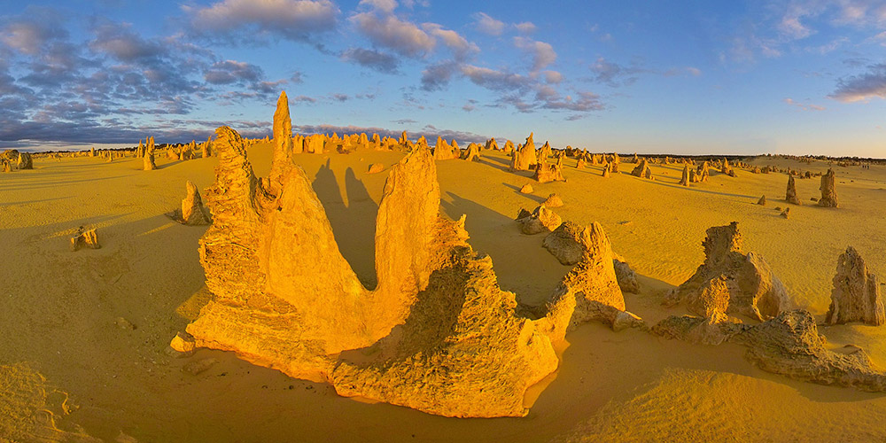
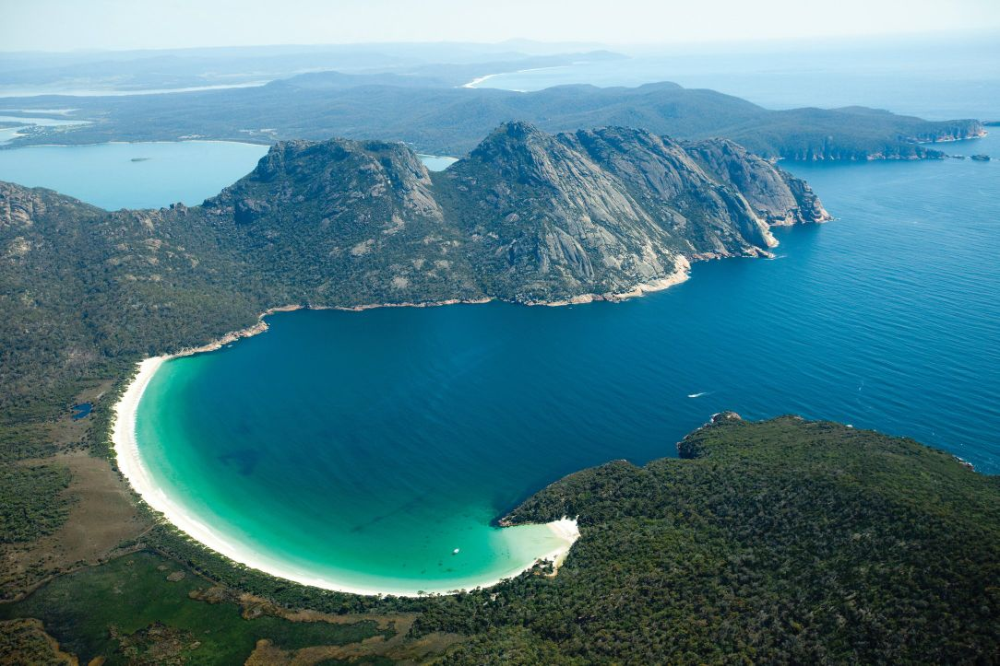
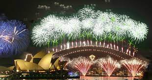

FUN THINGS TO DO IN AUSTRALLIA
RIDE A LUXURY TRAIN ACROSS THE CONTINENT

Named after the Afghan camel drivers that used to roam Australia's centre, this unforgettable train journey takes in 2979 kilometres (1851 miles) of tropics, the mountains of the Flinders Ranges, scorched desert, Katherine Gorge and the Red Centre. The Ghan takes three days to cross the continent, from Darwin to Adelaide or vice versa, including fascinating whistlestop tours in Katherine and Alice Springs. You can also opt for a trip on the Indian Pacific, a four-day journey from Sydney to Perth or vice versa.
ENTER ANOTHER WORLD AT THE PINNACLES

On the Turquoise Coast of Western Australia, 250 kilometres (155 miles) north of Perth, you will find the Pinnacles Desert, where hundreds of ancient limestone pillars look like extraterrestrial tombstones. The park is fringed by secluded white beaches, wildflowers, unique fauna and excellent fishing. Stay in the nearby fishing village of Cervantes or journey up the Indian Ocean Drive to discover all the colourful beauty and incredible wildlife interactions along the way.
TAKE A ROAD TRIP AROUND TASMANIA

Start with a breakfast of fresh doughnuts and bagels at the Farm Gate Market in Hobart then spend a few days feasting through Tasmania. There is lots of local produce to sample, with rarely more than an hour's drive between gourmet towns and stores. Eat apples at Willie Smith's Apple Shed, a ciderhouse turned museum in the Huon Valley; just-shucked Tassie oysters at Bangor Wine & Oyster Shed in Port Arthur; Belgian-style chocolates at the House of Anvers near Latrobe; and the triple cream brie or chilli camembert from Wicked Cheese in historic Richmond. Tasmania is famous for its cool-climate wines, and the Tamar Valley, running north from Launceston, is Tasmania's premier wine region. Don’t miss the pinot noir, Tasmania's signature wine variety, from the state's oldest vineyard at Providence.
SEE THE SYDNEY HARBOUR NEW YEAR'S EVE FIREWORKS

One of the first places in the world to welcome the new year, Sydney Harbour puts on a spectacular show. The fireworks at 9pm and midnight on New Year's Eve are not to be missed, with pyrotechnics from the Sydney Harbour Bridge to the Opera House, and light shows and more fireworks from barges on the harbour. There are vantage points to suit every budget. Plant a picnic rug at one of the many parks around Sydney's foreshore, jump on a ferry or boat cruise to view from the water, book into a waterside hotel room or attend one of the many ticketed events such as the parties on Fort Denison and Shark islands or the family celebrations at Taronga Zoo Sydney and Darling Harbour.
CRUISE THE KIMBERLEY

One of the best ways to see the Kimberley – one of the last true wilderness areas on Earth – is by cruise ship, and there are lots of options. You'll get up close to the rocky shores, secluded beaches, ochre coloured gorges, lush waterfalls, and complex river systems as you enjoy gourmet meals and luxury sleeping quarters.